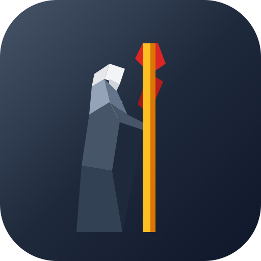

Suwu
Make the remote shell enjoyable
in agentic AI time.

Your real shell, in a browser tab. Suwu gives agents and humans alike a tiling terminal that keeps running when you don't — refresh, disconnect, come back tomorrow, pick up where you left off.
Install
curl -fsSL https://raw.githubusercontent.com/liyu1981/suwu/refs/heads/master/install.sh | sh
The download lands in ~/.local/bin/suwu and walks you through onboarding.
See it in action.
Built for the way you actually work.
-
A tile-based window manager, by keyboard or mouse
Split, focus, move, and swap tiles with fast key bindings or a click and drag — whichever fits the moment. And your sessions live in the layout: refresh the page, drop the connection, even restart the server, and every tile comes back exactly as you left it.
-
Full-featured terminals, perfect for agents
Real shells with selection, copy/paste, scrollback, and notifications — comfortable for you, and a solid target for agent orchestrators like
opencode,pi, andherdrthat drive many terminals at once. -
Convenient apps for everyday dev work
A file browser with download, a file viewer with auto-refresh, and a TCP/UDP port forwarder — the small tools you'd otherwise reach for a second terminal or a GUI client, right in the grid next to your shells.
-
From terminal to web, with suwu commands
suwu sendposts a notification to your screen from any script — pipe stdin, set a title.suwu forwardopens a port-forwarding tile,suwu openresolves links and actions on the remote machine. Long builds finish? You'll know. -
Reachable, but only by you
Access works out of the box on localhost, your LAN, or over the internet behind a reverse proxy — with password authentication, per-run tokens, and one-command HTTPS.
-
Yours to tune
Pick your font family and size, theme the colors, dial in a glassy background alpha. The interface speaks English and Chinese out of the box.
-
Install once, stay current
Onboarding sets up your dev environment step by step, and
suwu updatekeeps the binary fresh. No config files to babysit.
Inspired by great work.
Suwu is inspired by Omarchy — the opinionated, keyboard-first Arch + Hyprland setup from DHH and team. With that same spirit, Suwu aims to bring that same level of enjoyment to the web-based remote shell — a terminal you would actually want to use day after day.
Built on the shoulders of creack/pty, libghostty-go, xterm.js, React, Tailwind CSS, Radix UI, and wazero.